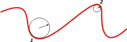
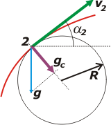

|
NO ME SALEN
PROBLEMAS RESUELTOS DE FÍSICA
(Movimiento relativo)
|
|

|
| |
FIS c7.13 - (opcional)
a) Encuentre el radio de curvatura del punto
más alto de la trayectoria de un proyectil disparado
con un ángulo inicial α con respecto a la
horizontal. (Sugerencia: En el punto máximo, la
velocidad es horizontal y la aceleración vertical).
b) Evaluar para: α = 30º y v0 = 10 m/s.
c) Con los datos del proyectil (b), calcule el
radio de curvatura cuando está en la mitad de
altura al subir y al bajar, interpetar. |
|
| |
¿Pero qué es el radio de curvatura? Toda curva tiene en cada punto una circunferencia (la circunferencia osculatriz) que tiene a misma curvatura que la curva en ese punto. Mirá e esquema:
|
|  |
|
|
Ahí en esa curva arbitraria te muestro dos puntos con sus circunferencias osculatrices. Cuanto más cerrada es una curva más chiquita es la circunferencia osculatriz y menor el radio de curvatura.
Vamos, entonces, al vértice de una parábola de un tiro oblicuo. En ese punto la velocidad vertical se anula por un instante (ése instante) y la aceleración es perpendicular a la trayectoria. (es el único punto donde eso ocurre).
Ahora bien: si la aceleración de la gravedad es la que produce la curvatura en la trayectoria natural del tiro oblicuo, en ese punto, el vértice, debe ser igual a la aceleración centrípeta de un cuerpo girando en la circunferencia osculatriz:
g = ac
Y al aceleración centrípeta vale:
ac = v²/R
Donde v es igual a v0 cos α, y R es el radio de curvatura. Por lo tanto
|
|
|
|
|
|
Vamos al caso particular propuesto por el enunciado, α = 30º y v0 = 10 m/s.:
R = (10 m/s cos 30º)²/ 10 m/s²
|
|
|
|
|
|
Vamos ahora a otro punto de la trayectoria, 2, la mitad de su altura máxima, y2. Primero debemos conocer la altura máxima, que se caracteríza por:
ymáx = v0 sen α tmáx − 5 m/s² tmáx²
0 m/s = v0 sen α − 10 m/s² tmáx
Operando con las dos ecuaciones a la vez tendremos:
ymáx = 1,25 m , tmáx = 0,5 s
Luego:
y2 = 0,625 m , t2 = 0,146 s
Con el dato del instante podemos conocer la velocidad en el instante 2:
Vy2 = 3,54 m/s , vx2 = 8,66 m/s
Y el cuadrado de la velocidad (que es lo que necesitamos en la ecuación de radio de curvatura:
V2² = Vy2² + vx2²
V2² = 87,49 (m/s)²
Pero también necesitamos la aceleración centrípeta, que en este caso no es la gravedad sino una parte de ella (mirá el gráfico): |
|
|
|  |
Ahí representé la trayectoria en rojo, la velocidad en el punto 2, la circunferencia osculatriz, la aceleración de la gravedad en celeste y la aceleración centrípeta en violeta, que es la que necesitamos y es una parte de la gravedad. ¿Qué parte?
Si lo mirás bien el ángulo que forma la gravedad y su componente, es el mismo que forma la velocidad con la horizontal, α2. Y la componente de la gravedad que buscamos es:
gc = g cos α2
|
|
|
|
α2 surge de las componentes de la velocidad V2.
α2 = arc tg (Vy2 / vx2)
α2 = 22, 23º
De donde:
gc = 10 m/s² cos22, 23º
gc = 9,25 m/s²
Ya tenemos todos lo ingredientes, calculemos el radio de curvatura en un punto a mitad de la altura máxima:
R = v2²/ gc
R = 87,49 (m/s)² / 9,25 m/s²
|
|
|
|
|
|
Tenés bastante más sobre circunferencia osculatriz y radio de curvatura en los ejercicios de cinemática escalar. |
|
|
DESAFIO: ¿Cuánto vale el radio de curvatura de una recta?
|
|
 |
| Algunos derechos reservados.
Se permite su reproducción citando la fuente. Este material es absolutamente gratuito y sin fines de lucro. Última actualización may-14. Buenos Aires, Argentina. |
|
|
| |
|